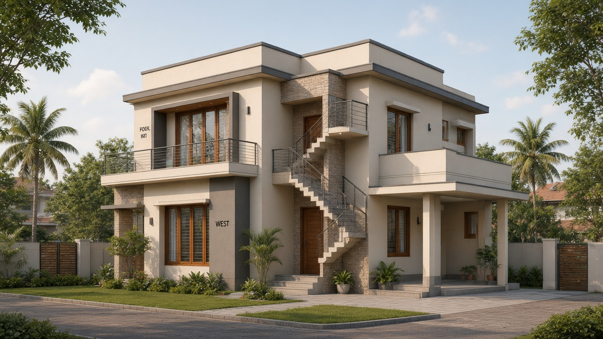
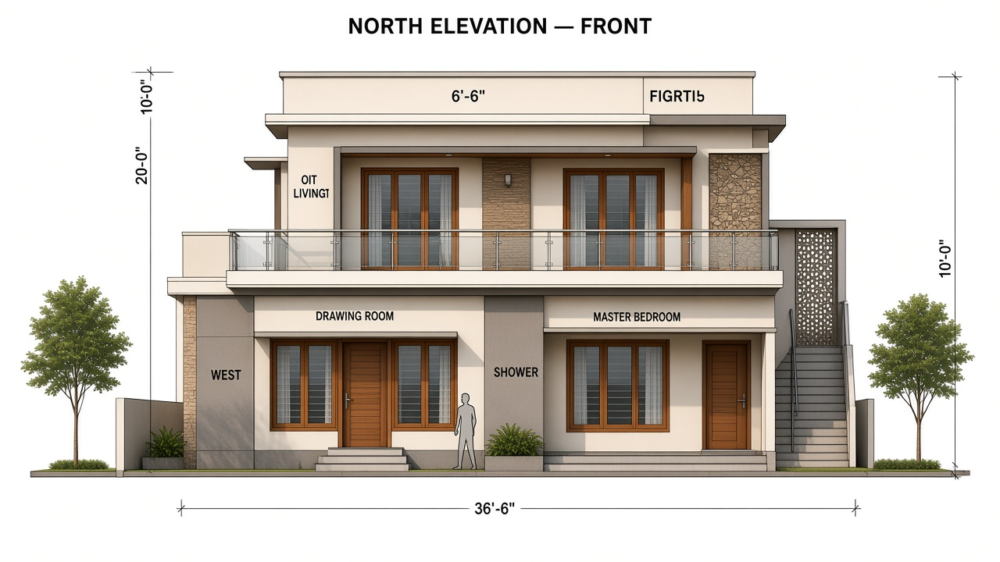
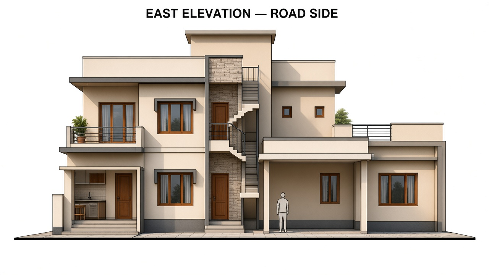
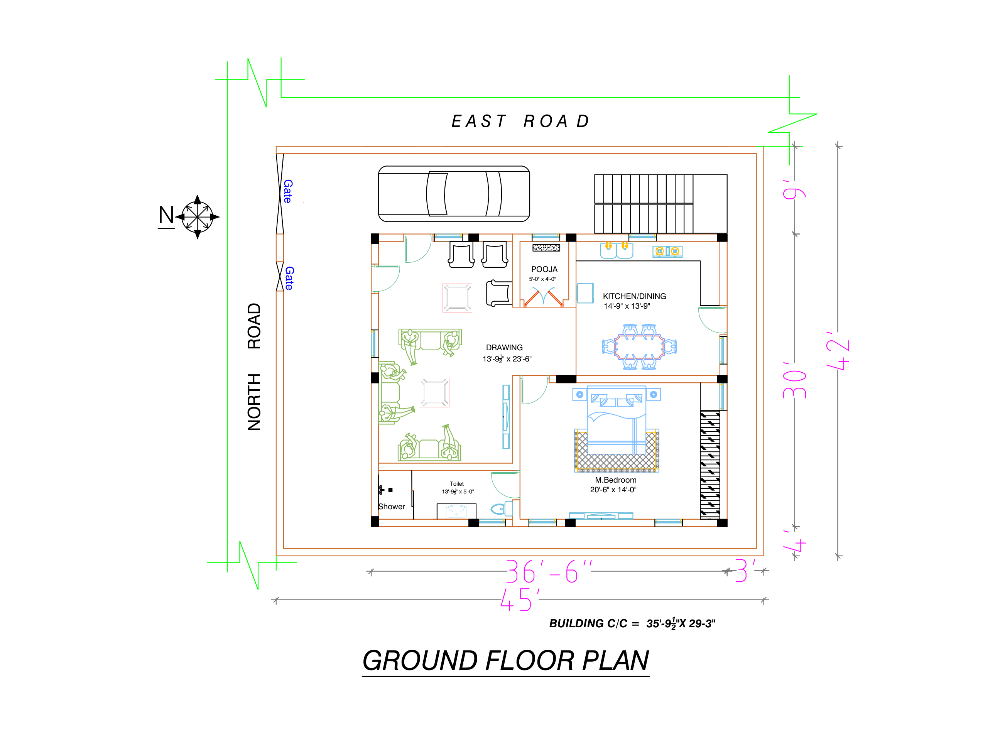
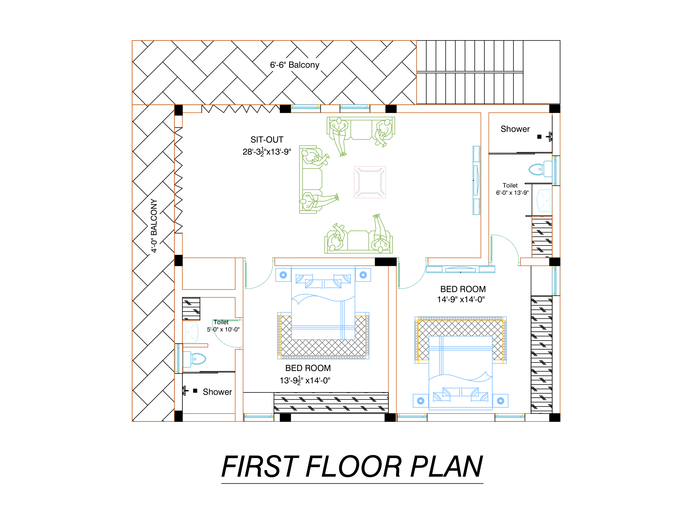

Valamil Residence
Two-storey elevation design from the ground and first floor plans — corner plot addressing North Road and East Road.
Footprint ≈ 36'-6" × 30'-0"
Flat terrace roof
Modern tropical contemporary
Corner view
Northeast massing — both street faces together.

NE corner perspective — north balcony + east porch / stair tower
Elevations
Orthographic street elevations aligned to the plans.

North elevation — Drawing room below, sit-out balcony above

East elevation — porch canopy, car bay, external stair
Design notes
How the plans drive the facade.
Massing
- Simple rectangular two-storey volume
- North balcony (6'-6") + west wrap (4'-0")
- East stair as vertical accent tower
- Flat RCC terrace with thin parapet
Openings
- Tall Drawing fenestration on North Road
- Full-width sit-out glazing behind balcony
- Kitchen / bedroom windows on East
- Teak frames, horizontal balcony railing
Palette
Cream plaster, charcoal accent, teak wood, light stone on stair.
Source plans
Uploaded ground and first floor references.

Ground floor plan

First floor plan